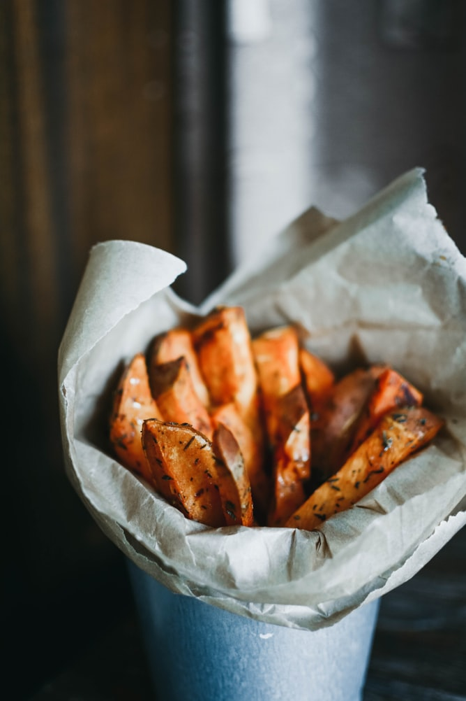
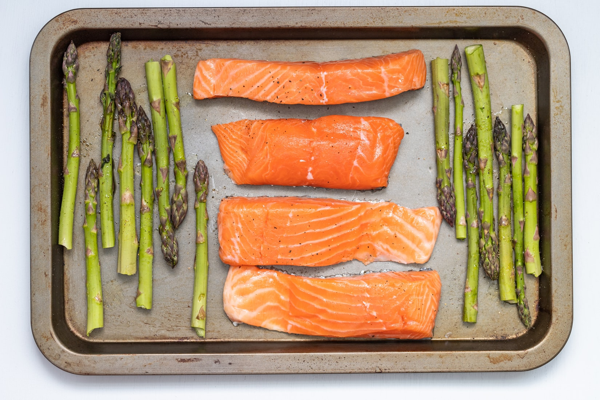
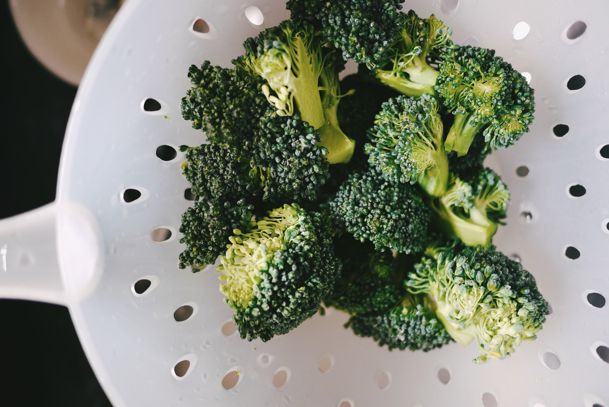

Bon Appétit!
Lead a healthy lifestyle with these easy recipes and useful tips!

45 mins
Make delicious sweet potatoes with these few simple steps! All you need are some basic ingredients and patience.

30 mins
Cooking salmon can be extremely easy! Salmon is rich in healthy oils. Follow this recipe to serve this as a main dish!

20 mins
Low in calories but rich in nutritional benefits! Learn how to bake broccoli as the perfect side dish.